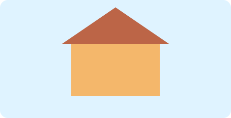

1. Будиночок мрії
Намалюйте будиночок із даху, дверей та вікон.
⌨️ Відкрити заготовку коду
import pgzrun
WIDTH = 600
HEIGHT = 400
def draw():
screen.fill("lightblue")
screen.draw.filled_rect(Rect((160, 175), (280, 160)), (245, 190, 120))
screen.draw.line((160, 175), (300, 75), "brown")
screen.draw.line((300, 75), (440, 175), "brown")
# TODO: домалюйте деталі сцени
pgzrun.go()Що дописати
- Додайте друге вікно та змініть колір даху.
- Змініть щонайменше два параметри та перевірте результат запуском.